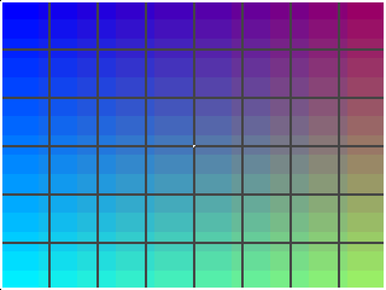

03 · RAM: single-port and dual-port
Memory you can write. A single-port RAM checks itself about 3,000 times a second, and a dual-port RAM is a frame buffer: written at 50 MHz by a little paint program, read at 25 MHz by the screen.
What you will see

| Where | What |
|---|---|
| Screen | The frame buffer, each of its 160 × 120 pixels drawn as a 4 × 4 block. At start-up: the test picture above |
| Game pad | Joystick moves the cursor; A paints with the wheel's colour (turn the wheel to change it); B erases; Select clears; Start redraws the test picture |
| HEX5..HEX0 | Self-test errors since power-up, in decimal. Must stay 0 |
| SW0 up | Inject one wrong bit per pass on purpose: errors must climb by one per pass (proves the test can see errors). LEDR0 shows SW0 |
| Your PC | python scripts/de10.py log: RAM BIST passes=00005372 errors=00000000 last=0000 every second |
Block diagram
The three RAM templates
All three are plain Verilog written the way Quartus recognizes as block memory (M9K). They live in lib/rtl/:
| Module | Ports | Use it for |
|---|---|---|
ram_sp | one address, write + read, one clock | scratch memory, tables you update, a CPU's data RAM |
ram_dp | one write port, one read port, each with its own clock | frame buffers, FIFOs, passing data between clock domains |
ram_tdp | two independent read/write ports, two clocks | shared memory between two engines (e.g. CPU and DMA) |
ram_dp #(.WIDTH(12), .AW(15), .DEPTH(19200)) fb (
.wr_clk(clk_50), .wr_addr(wr_addr), .wr_d(wr_d), .we(we), // paint
.rd_clk(clk_25), .rd_addr(rd_addr), .rd_q(pixel)); // screenDEPTH keeps the memory to what you need: 19,200 words instead of the 32,768 a 15-bit address could reach.
Every read answers one clock after the address, so the screen asks for the next pixel, exactly as with ROMs (example 02).
Things learned building it (each one cost a build)
- Wait for the PLL before writing block RAM. The first version filled the frame buffer the moment the FPGA started:
the screen stayed black, although simulation passed. The PLL was not locked yet, and writes on an unsettled clock were lost.
The fix:
paintwaits forlocked(synchronized into its clock). Found with Signal Tap (the painter was idle and the VGA output black) and a simulation of the same fill (which passed): the difference had to be real hardware. - Quartus 17.1 ignores initial values on output ports.
output reg [7:0] cx = 80starts at 0, silently. Set start values in a reset branch instead (internalreg x = 5;works). - The game-pad ADC needs a 50 MHz clock and two fixes in the template's ADC IP (it ran the ADC at 12.5 MHz, above the
10 MHz spec, and missed Altera's timing constraints). Fixed in
lib/rtl/adc; timing is now clean. - Prove the checker. A memory test that never reports errors may just be broken. SW0 injects one bad bit per pass, and the count climbs by exactly one per pass.
Measured on the board
SW0 up: RAM BIST passes=00005F5E errors=00005F5E last=0001 ~3,050 passes / s, one error per pass, as injectedSW0 down (no injection, errors must stay 0) is verified in simulation (tb_ram_bist.sv);
the board run with SW0 down is still to do.
Screen read back over USB: the test picture, pixel for pixel (image above). Resources: 7,193 logic elements (14 %), memory 78 % (screen read-back buffer 56 %, frame buffer 14 %, BIST RAM 8 %). Timing: no negative slack.
Run it
python scripts/de10.py program examples/03_ram/ram.sof
python scripts/de10.py log 3
python scripts/de10.py screen logs/paint.pngBuild it yourself
python scripts/new_project.py examples/03_ram ram_top --lib display gamepad debug print mux bcd sevenseg ram
python scripts/de10.py build examples/03_ram
python scripts/de10.py program examples/03_ramTest without the board
python scripts/sim.py examples/03_ram/sim/tb_paint_fb.sv → 50 pixels checked, 0 errors PASS
python scripts/sim.py examples/03_ram/sim/tb_ram_bist.sv → passes with 0 errors; with inject, 1 per pass PASSFiles
| File | What |
|---|---|
src/ram_top.sv | Top: display, game pad, frame buffer, self-test, USB report |
src/paint.sv | Frame-buffer writer: test picture, cursor, painting |
src/ram_bist.sv | Single-port RAM self-test with error injection |
sim/tb_paint_fb.sv, sim/tb_ram_bist.sv | Unit tests |
lib/rtl/ram_sp.sv, ram_dp.sv, ram_tdp.sv | The RAM templates |
lib/rtl/tx_mux.sv | Two text senders sharing the USB link |